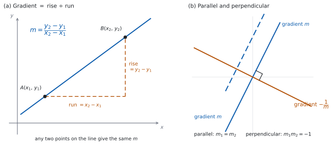

SL 2.1 — Different forms of the equation of a straight line（直線の方程式）
- gradient（傾き）を、公式集の \(m = \dfrac{y_{2}-y_{1}}{x_{2}-x_{1}}\) で \(2\) 点から求められる。
- 直線の\(3\) つの形（\(y = mx+c\)、\(ax+by+d=0\)、\(y-y_{1} = m(x-x_{1})\)）を使い分けられる。
- \(3\) つの形を、行き来できる。
- intercepts（切片）を求められる。
- parallel（平行）\(m_{1} = m_{2}\) と perpendicular（垂直）\(m_{1} \times m_{2} = -1\) を使える。
- 道路や橋の勾配を、傾きとして扱える。
The idea
1. 直線は、傾きと \(1\) 点で決まる
紙の上に直線を \(1\) 本引くには、何が分かればよいでしょうか。
\(2\) 点が分かれば引けます。でも、それだけではありません。
傾きと、通る点が \(1\) つでも引けます。傾きが「どちらへどれだけ進むか」を決め、点が「どこを通るか」を決めるからです。
\[ \text{直線} \ = \ \text{傾き} \ + \ \text{通る点 } 1 \text{ つ} \]
直線の式が \(3\) つの形を持つのは、この \(2\) つをどう書くかの違いです（第 3 節）。
2. gradient（傾き）を、\(2\) 点から出す
\[ m = \frac{y_{2}-y_{1}}{x_{2}-x_{1}} \tag{1}\]
公式集の 2.1 の欄に Gradient formula として印刷されています。
\(m = \dfrac{y_{2}-y_{1}}{x_{2}-x_{1}}\)
上が縦の変化、下が横の変化です。英語では rise over run（上がり ÷ 進み）と言います。

図 1 の (a) が、その様子です。直線上のどの \(2\) 点で測っても、\(m\) は同じ値になります。(b) は第 6 節で使います。
\(A(1,5)\) と \(B(4,14)\) なら、
\[ m = \frac{14-5}{4-1} = 3 \qquad \text{または} \qquad m = \frac{5-14}{1-4} = \frac{-9}{-3} = 3 \]
どちらの順でも同じ値になります。いけないのは、上と下で、先に書く点を変えてしまうことです。次の式は、上を \(A\) から（\(5-14\)）、下を \(B\) から（\(4-1\)）取っているので、符号が逆になります。
\[ \frac{5 - 14}{4 - 1} = -3 \quad (\text{符号が逆になります}) \]
上と下で、同じ点を先に書く。 これだけで防げます。
直線上の異なる \(2\) 点をとっても \(x_{1} = x_{2}\) になってしまうときは、分母が \(0\) です。 このとき直線は縦向きで、傾きは定義されません（第 6 節、演習 \(9\)）。
3. \(3\) つの形
\[ y = mx + c \tag{2}\]
\[ ax + by + d = 0 \tag{3}\]
\[ y - y_{1} = m(x - x_{1}) \tag{4}\]
公式集の 2.1 の欄に Equations of a straight line として、まとめて印刷されています。
\(y = mx + c\) ; \(ax + by + d = 0\) ; \(y - y_{1} = m\left(x - x_{1}\right)\)
シラバスの Guidance 欄には、名前も書かれています。
\(y = mx + c\) (gradient-intercept form).
\(ax + by + d = 0\) (general form).
\(y - y_1 = m(x - x_1)\) (point-gradient form).
| 形 | 英語名 | すぐ読み取れるもの | 使うとき |
|---|---|---|---|
| \(y = mx + c\) | gradient-intercept form | 傾き \(m\)、\(y\) 切片 \(c\) | グラフをかく、傾きを比べる |
| \(ax + by + d = 0\) | general form | — | 答えを整数の係数でそろえる |
| \(y - y_{1} = m(x-x_{1})\) | point-gradient form | 傾き \(m\)、通る点 \((x_{1}, y_{1})\) | 式を組み立てる |
傾きと、\(y\) 切片でない点が分かっているときは、point-gradient form から組み立てます。傾きと点が \(1\) つあれば、そのまま書けるからです。\(y\) 切片そのものが分かっているときは、\(y = mx + c\) に直接入れるほうが速くなります。
4. \(3\) つの形を行き来する
\((2,-3)\) を通り、傾き \(-\dfrac{1}{2}\) の直線で見ます。
point-gradient form。 \(x_{1} = 2\)、\(y_{1} = -3\)、\(m = -\dfrac{1}{2}\) を入れるだけです。
\[ y - (-3) = -\frac{1}{2}(x - 2), \qquad \text{つまり} \qquad y + 3 = -\frac{1}{2}(x-2) \]
gradient-intercept form へ。 展開して \(y\) について解きます。
\[ y + 3 = -\frac{1}{2}x + 1 \ \Rightarrow \ y = -\frac{1}{2}x - 2 \]
general form へ。 分母をはらって、片側に集めます。
\[ 2y = -x - 4 \ \Rightarrow \ x + 2y + 4 = 0 \]
\(ax+by+d=0\) で答えるよう言われたら、分数を残さないのがふつうです。両辺に分母の最小公倍数を掛けてください。
\(a > 0\) になるようにそろえる習慣も、答え合わせが楽になります。\(-x-2y-4=0\) と \(x+2y+4=0\) は同じ直線です。
5. intercepts（切片）
| 切片 | 求め方 | 座標 |
|---|---|---|
| \(y\)-intercept | \(x = 0\) を入れる | \((0, \ \ldots)\) |
| \(x\)-intercept | \(y = 0\) を入れる | \((\ldots, \ 0)\) |
\(x + 2y + 4 = 0\) なら、
\[ x = 0: \ 2y + 4 = 0 \ \Rightarrow \ y = -2 \qquad (0, -2) \]
\[ y = 0: \ x + 4 = 0 \ \Rightarrow \ x = -4 \qquad (-4, 0) \]
\(x = 0\) を入れると \(y = c\) になるからです。\(x\) 切片は読み取れません。 そちらは \(y = 0\) を入れて計算します。
\(y\) 切片を「\(c\)」、\(x\) 切片を「\(-\dfrac{c}{m}\)」と暗記する必要はありません。\(0\) を入れるほうが速くて確実です。
6. 平行と垂直
\[ \text{parallel:} \quad m_{1} = m_{2} \tag{5}\]
\[ \text{perpendicular:} \quad m_{1} \times m_{2} = -1 \tag{6}\]
公式集の 2.1 の欄にあるのは、直線の \(3\) つの形と gradient formula だけです。平行・垂直の条件は印刷されていないので、覚えてください。
シラバスの Content 欄には、こう書かれています。
Parallel lines \(m_1 = m_2\).
Perpendicular lines \(m_1 \times m_2 = -1\).
\(m_{1} \neq 0\) のとき、\(m_{1}m_{2} = -1\) は \(m_{2} = -\dfrac{1}{m_{1}}\) と書き直せます。逆数にして、符号を変えると覚えてください（negative reciprocal、負の逆数）。\(m_{1} = 0\)（横向きの直線）のときは、下の警告を見てください。
図 1 の (b) が、平行な直線と垂直な直線の見え方です。
| \(m_{1}\) | 垂直な直線の傾き \(m_{2}\) |
|---|---|
| \(2\) | \(-\dfrac{1}{2}\) |
| \(-\dfrac{2}{3}\) | \(\dfrac{3}{2}\) |
| \(1\) | \(-1\) |
\(y = 3\)（横向き、\(m = 0\)）と \(x = 5\)（縦向き、傾きなし）は垂直に交わりますが、\(m_{1}m_{2} = -1\) では確かめられません。
\(0 \times (\text{定義されない値})\) が書けないからです。式 6 が使えるのは、どちらの直線も縦向きでないときです（演習 \(9\)）。
7. 勾配 — 傾きが表しているもの
シラバスは、傾きを実際の場面で使うことも求めています。
Calculate gradients of inclines such as mountain roads, bridges, etc.
道路標識の「\(5\%\)」は、傾きを百分率で書いたものです。
\[ \text{勾配} = \frac{\text{高さの変化}}{\text{水平方向の距離}} \]
水平に \(900\) m 進んで \(45\) m 上がる道なら、
\[ m = \frac{45}{900} = \frac{1}{20} = 0.05 \ \rightarrow \ 5\% \]
\(5\%\) は、水平に \(100\) m 進んで \(5\) m 上がるという意味です。「道に沿って \(100\) m 進んで」ではありません。
傾きがゆるいときは、この \(2\) つはほとんど同じです。急な坂では、はっきり違ってきます。
TI-Nspire の Graphs 画面に \(2\) 本の直線を入れると、平行かどうか・垂直かどうかが目で見えます。交点は menu → Analyze Graph → Intersection で出せます。
画面の縦横の比率に気をつけてください。 目盛りの幅がそろっていないと、垂直な \(2\) 直線が垂直に見えません。menu → Window/Zoom → Zoom Square でそろえられます。
Paper 1 では使えません。 このページの例題と演習は、すべて手で解ける形にしてあります。
Why it works
なぜ、垂直な \(2\) 直線の傾きの積が \(-1\) になるのでしょうか。
傾きが \(m\) の直線を思い浮かべます。原点から出発して、右へ \(1\)、上へ \(m\) 進むと、その直線の上に乗ります。つまり、直線の向きは \((1, m)\) という進み方で表せます。
この向きを、\(90^{\circ}\) 回します。 「右へ \(1\)、上へ \(m\)」という矢印を、横の辺の長さが \(1\)、縦の辺の長さが \(m\) の直角三角形の斜辺だと思ってください。この三角形を原点のまわりに反時計回りに \(90^{\circ}\) 回すと、横だった辺が縦になり、縦だった辺が横になります。 「右へ \(1\)」は「上へ \(1\)」に、「上へ \(m\)」は「左へ \(m\)」に変わるので、新しい向きは \((-m, \, 1)\) です。
（\(m < 0\) のときは「左へ \(m\)」が実際には右向きになりますが、座標の書き方は同じ \((-m, 1)\) です。）
新しい向きの傾きは、
\[ m_{2} = \frac{1}{-m} = -\frac{1}{m} \]
ですから
\[ m_{1} m_{2} = m \times \left(-\frac{1}{m}\right) = -1 \]
\(m = 0\) のときだけ、この計算が書けません。 横向きの直線を \(90^{\circ}\) 回すと縦向きになり、傾きが定義されないからです。だから第 6 節の但し書きが要ります。
\(3\) つの形が同じ直線を表す理由も、ひとことで言えます。どれも「傾きが一定」という同じ事実を書いているだけです。\(y - y_{1} = m(x-x_{1})\) を \(x - x_{1}\) で割れば 式 1 に戻ります（\(x \neq x_{1}\) のとき）。
Worked examples
問題文は英語です。意味が理解できなかったら、問題文の下の「日本語訳」を開いてください。解説は日本語です。
例題も演習も、すべて電卓なしで解けます。 Paper 1 のつもりで解いてください。
例題 1 The points \(A(1, 5)\) and \(B(4, 14)\) lie on a line \(L\).
(a) Find the gradient of \(L\).
(b) Find the equation of \(L\) in the form \(y = mx + c\).
(c) Find the equation of \(L\) in the form \(ax + by + d = 0\), where \(a\), \(b\) and \(d\) are integers.
(d) Find the \(x\)-intercept of \(L\).
日本語訳
\(2\) 点 \(A(1,5)\)、\(B(4,14)\) が直線 \(L\) の上にあります。
(a) \(L\) の傾きを求めなさい。
(b) \(L\) の方程式を \(y = mx + c\) の形で求めなさい。
(c) \(L\) の方程式を、\(a\)、\(b\)、\(d\) を整数として \(ax+by+d=0\) の形で書きなさい。
(d) \(L\) の \(x\) 切片を求めなさい。
(a) 式 1 に入れます。上も下も、\(B\) を先に書きます。
\[ m = \frac{14-5}{4-1} = \frac{9}{3} = 3 \]
(b) point-gradient form から始めます（表 1）。点は \(A(1,5)\) を使います。
\[ y - 5 = 3(x-1) \ \Rightarrow \ y - 5 = 3x - 3 \ \Rightarrow \ y = 3x + 2 \]
(c) すべて左に集めます。
\[ 3x - y + 2 = 0 \]
(d) \(y = 0\) を入れます（表 2）。
\[ 0 = 3x + 2 \ \Rightarrow \ x = -\frac{2}{3} \]
\(x\) 切片は \(\left(-\dfrac{2}{3}, \ 0\right)\) です。
検算（(b) について）。 \(A\) ではなく \(B\) を通ることを確かめます。 \(x = 4\) を入れると
\[ y = 3(4) + 2 = 14 \]
\(B(4,14)\) と合いました ✓ 式を作るのに使わなかったほうの点で確かめるのが要です。\(A\) を入れても、作るときに使った式をなぞるだけになります。
検算（(d) について）。 出した \(x\) を、もとの式に入れ直します。
\[ y = 3\left(-\frac{2}{3}\right) + 2 = -2 + 2 = 0 \]
\(y = 0\) になりました ✓
上下の順をまちがえて \(m = \dfrac{5-14}{4-1} = -3\) としていたら、\(A(1,5)\) から \(y - 5 = -3(x-1)\)、つまり \(y = -3x + 8\) になります。\(x = 4\) を入れると \(y = -12 + 8 = -4\) で、\(B\) の \(y = 14\) と合いません。傾きをまちがえると、\(y\) 切片まで変わります。
(a) \[m = \frac{14-5}{4-1} = 3\]
(b) \[y - 5 = 3(x-1), \qquad y = 3x + 2\]
(c) \[3x - y + 2 = 0\]
(d) \(y = 0\) gives \(3x + 2 = 0\) \[x = -\frac{2}{3}\]
例題 2 A line \(L\) passes through the point \((4, -1)\) and has gradient \(-\dfrac{3}{2}\).
(a) Write down the equation of \(L\) in the form \(y - y_{1} = m(x - x_{1})\).
(b) Find the equation of \(L\) in the form \(ax + by + d = 0\), where \(a\), \(b\) and \(d\) are integers.
(c) Find the \(y\)-intercept of \(L\).
日本語訳
直線 \(L\) は点 \((4,-1)\) を通り、傾きは \(-\dfrac{3}{2}\) です。
(a) \(L\) の方程式を \(y - y_{1} = m(x-x_{1})\) の形で書きなさい。
(b) \(L\) の方程式を、\(a\)、\(b\)、\(d\) を整数として \(ax+by+d=0\) の形で求めなさい。
(c) \(L\) の \(y\) 切片を求めなさい。
(a) 式 4 に、そのまま入れます。\(y_{1} = -1\) なので、左辺は \(y - (-1) = y + 1\) です。
\[ y + 1 = -\frac{3}{2}(x - 4) \]
(b) 両辺を \(2\) 倍して、分数をなくします（第 4 節）。
\[ 2y + 2 = -3(x - 4) = -3x + 12 \]
\[ 3x + 2y - 10 = 0 \]
(c) \(x = 0\) を入れます。
\[ 2y - 10 = 0 \ \Rightarrow \ y = 5 \]
\(y\) 切片は \((0, 5)\) です。
検算（(b) について）。 与えられた点 \((4,-1)\) を、答えの式に入れます。
\[ 3(4) + 2(-1) - 10 = 12 - 2 - 10 = 0 \]
\(0\) になりました ✓ general form では、点を代入して \(0\) になるかを見ます。
傾きも確かめます。 \(3x + 2y - 10 = 0\) を \(y\) について解くと \(y = -\dfrac{3}{2}x + 5\) で、傾きは \(-\dfrac{3}{2}\) ✓ 問題文と合っています。
\(y + 1 = -\dfrac{3}{2}(x+4)\) と符号をまちがえていたら、\((4,-1)\) を入れたとき左辺は \(-1+1 = 0\)、右辺は \(-\dfrac{3}{2}(8) = -12\) となり、合いません。\(x_{1}\) の符号は、必ず引き算の形で確かめてください。
(a) \[y + 1 = -\frac{3}{2}(x-4)\]
(b) \[2y + 2 = -3x + 12, \qquad 3x + 2y - 10 = 0\]
(c) \(x = 0\) gives \(2y - 10 = 0\) \[y = 5, \qquad (0, 5)\]
例題 3 The line \(L\) has equation \(2x + 3y - 12 = 0\).
(a) Find the gradient of \(L\).
(b) Find the equation of the line through \((3, 1)\) that is parallel to \(L\), in the form \(ax + by + d = 0\).
(c) Find the equation of the line through \((3, 1)\) that is perpendicular to \(L\), in the form \(ax + by + d = 0\).
(d) Explain why the line found in part (b) can never meet \(L\).
日本語訳
直線 \(L\) の方程式は \(2x + 3y - 12 = 0\) です。
(a) \(L\) の傾きを求めなさい。
(b) \((3,1)\) を通り \(L\) に平行な直線の方程式を、\(ax+by+d=0\) の形で求めなさい。
(c) \((3,1)\) を通り \(L\) に垂直な直線の方程式を、\(ax+by+d=0\) の形で求めなさい。
(d) (b) で求めた直線が \(L\) と決して交わらない理由を説明しなさい。
(a) \(y\) について解いて、\(y = mx+c\) の形にします。
\[ 3y = -2x + 12 \ \Rightarrow \ y = -\frac{2}{3}x + 4 \]
傾きは \(-\dfrac{2}{3}\) です。
(b) 平行なので、傾きは同じ \(-\dfrac{2}{3}\) です（式 5）。
\[ y - 1 = -\frac{2}{3}(x-3) \]
\(3\) 倍して整理します。
\[ 3y - 3 = -2x + 6 \ \Rightarrow \ 2x + 3y - 9 = 0 \]
(c) 垂直なので、傾きは負の逆数 \(\dfrac{3}{2}\) です（表 3）。
\[ y - 1 = \frac{3}{2}(x-3) \]
\(2\) 倍して整理します。
\[ 2y - 2 = 3x - 9 \ \Rightarrow \ 3x - 2y - 7 = 0 \]
(d) Explain why なので、英語で理由を書きます。「平行だから」で止めず、交わる点が存在しないことまで示します。
試験ではこう書く
The line found in part (b) is \(2x + 3y - 9 = 0\) and \(L\) is \(2x + 3y - 12 = 0\). Suppose a point \((x, y)\) lay on both lines. The first equation gives \(2x + 3y = 9\) and the second gives \(2x + 3y = 12\), so \(9 = 12\), which is impossible. Hence no point lies on both lines, and the two lines never meet. Both lines have gradient \(-\dfrac{2}{3}\), so they are parallel, and they are different lines because their constant terms differ.
（(b) で求めた直線は \(2x+3y-9=0\)、\(L\) は \(2x+3y-12=0\) である。ある点 \((x,y)\) が両方の直線の上にあると仮定する。\(1\) つ目の式から \(2x+3y=9\)、\(2\) つ目の式から \(2x+3y=12\) となるので \(9=12\) となり、これはあり得ない。したがって両方の直線に乗る点は存在せず、\(2\) 直線は交わらない。どちらの直線も傾きは \(-\dfrac{2}{3}\) なので平行であり、定数項が違うので別の直線である、という意味です。）
検算（(b) について）。 点 \((3,1)\) を答えの式に入れます。\(2(3) + 3(1) - 9 = 6 + 3 - 9 = 0\) ✓
平行なことも確かめます。 \(2x + 3y - 9 = 0\) と \(2x + 3y - 12 = 0\) は、\(x\) と \(y\) の係数が同じです。定数だけが違うので平行です ✓ general form では、\(x\) と \(y\) の係数の比が同じで、定数項だけが違えば平行です（定数項まで同じ比なら、同じ直線になります）。
検算（(c) について）。 点 \((3,1)\) を入れます。\(3(3) - 2(1) - 7 = 9 - 2 - 7 = 0\) ✓
傾きの積も見ます。 \(3x-2y-7=0\) を解くと \(y = \dfrac{3}{2}x - \dfrac{7}{2}\) で、\(-\dfrac{2}{3} \times \dfrac{3}{2} = -1\) ✓
(c) で傾きを \(\dfrac{2}{3}\)（符号を変えずに逆数だけ）としていたら、積は \(-\dfrac{4}{9}\) で \(-1\) になりません。逆数と符号の両方が要ります。
(a) \(y = -\dfrac{2}{3}x + 4\), so \(m = -\dfrac{2}{3}\)
(b) \[y - 1 = -\frac{2}{3}(x-3), \qquad 2x + 3y - 9 = 0\]
(c) \(m_{2} = \dfrac{3}{2}\) \[y - 1 = \frac{3}{2}(x-3), \qquad 3x - 2y - 7 = 0\]
(d) If a point lay on both lines, then \(2x + 3y = 9\) and \(2x + 3y = 12\), so \(9 = 12\), which is impossible. The lines are parallel and distinct, so they never meet.
例題 4 (a) A mountain road rises \(84\) m over a horizontal distance of \(1200\) m. Find the gradient of the road.
(b) Express this gradient as a percentage.
(c) A bridge has a gradient of \(0.02\). Find the rise over a horizontal distance of \(350\) m.
(d) A sign states that a road has a gradient of \(5\%\). A student says this means the road rises \(5\) m for every \(100\) m travelled along the road. Comment on this statement.
日本語訳
(a) ある山道は、水平方向に \(1200\) m 進むあいだに \(84\) m 上がります。この道の勾配を求めなさい。
(b) この勾配を百分率で表しなさい。
(c) ある橋の勾配は \(0.02\) です。水平方向に \(350\) m 進むあいだの上がりを求めなさい。
(d) ある標識に、道の勾配が \(5\%\) と書かれています。ある生徒が「これは道に沿って \(100\) m 進むごとに \(5\) m 上がるという意味だ」と言いました。この発言について述べなさい。
\[ m = \frac{84}{1200} = \frac{7}{100} = 0.07 \]
(b) \(100\) を掛けます。
\[ 0.07 \times 100 = 7\% \]
(c) 勾配 \(=\dfrac{\text{上がり}}{\text{水平距離}}\) なので、上がり \(=\) 勾配 \(\times\) 水平距離です。
\[ 0.02 \times 350 = 7 \ \text{m} \]
(d) Comment on なので、英語で書きます。正しいか正しくないかを、はっきり述べてから理由を書きます。
試験ではこう書く
The statement is not correct. A gradient is the rise divided by the horizontal distance, not the distance measured along the road, so a gradient of \(5\%\) means the road rises \(5\) m for every \(100\) m measured horizontally. For a gentle slope the two distances are almost the same, so the difference is small in practice, but they are not equal: the distance along the road is the hypotenuse of a right-angled triangle whose horizontal side is \(100\) m, so it is always longer than \(100\) m, and the difference grows as the slope becomes steeper.
（この発言は正しくない。勾配は上がりを水平距離で割ったものであり、道に沿って測った距離で割ったものではない。したがって \(5\%\) は、水平に \(100\) m 測って \(5\) m 上がるという意味である。ゆるい坂ではこの \(2\) つの距離はほとんど同じなので、実際の差は小さい。しかし等しくはない。道に沿った距離は、水平の辺が \(100\) m の直角三角形の斜辺なので、つねに \(100\) m より長く、坂が急になるほど差は大きくなる、という意味です。）
検算（(a) について）。 割合を、別の言い方でも出します。\(1200\) m は \(100\) m の \(12\) 倍です。\(84 \div 12 = 7\) なので、水平 \(100\) m あたり \(7\) m 上がることになり、\(\dfrac{7}{100} = 0.07\) ✓ 約分を経由しない道すじです。
検算（(c) について）。 答えを、勾配の式に戻します。\(\dfrac{7}{350} = \dfrac{1}{50} = 0.02\) ✓
(c) で \(350 \div 0.02 = 17\,500\) としていたら、掛けるところを割っています。橋が \(17.5\) km 上がることになり、あり得ません。 大きさの見当で気づけます。
(a) \[m = \frac{84}{1200} = \frac{7}{100} = 0.07\]
(b) \(0.07 \times 100 = 7\%\)
(c) \[0.02 \times 350 = 7 \ \text{m}\]
(d) Not correct. The gradient uses the horizontal distance, so \(5\%\) means a rise of \(5\) m for every \(100\) m measured horizontally, not along the road.
Common errors
\(\dfrac{y_{2}-y_{1}}{x_{2}-x_{1}}\) です。上と下で、同じ点を先に書いてください（第 2 節）。
ずれると符号だけが逆になるので、答えの符号が図と合わないときは、まずここを疑ってください。
\(y - y_{1} = m(x - x_{1})\) は、どちらも引き算です。\(y_{1} = -3\) なら左辺は \(y + 3\)、\(x_{1} = -4\) なら右辺は \(m(x+4)\) です。
与えられた点を答えの式に入れて、成り立つかを確かめてください。 これで必ず見つかります。
\(m_{1}m_{2} = -1\) には、逆数と符号の両方が要ります（表 3）。
\(m_{1} = -\dfrac{2}{3}\) に対して、\(\dfrac{2}{3}\) でも \(-\dfrac{3}{2}\) でもなく、\(\dfrac{3}{2}\) です。
積を計算して \(-1\) になるか、必ず見てください。
\(y\) 切片は \(x = 0\)、\(x\) 切片は \(y = 0\) です（表 2）。
「\(x\) 切片」は \(x\) 軸を切るところなので、そこでは \(y = 0\) です。名前と、\(0\) になる文字が入れかわることに注意してください。
\(ax+by+d=0\) で答えるよう言われたら、係数は整数にします（第 4 節）。
\(\dfrac{1}{2}x + y + 2 = 0\) ではなく、\(2\) 倍して \(x + 2y + 4 = 0\) です。
Exercises
各問題に、折りたたみが \(3\) つ付いています。日本語訳、解答例（答案用紙に書くべきこと。英語です）、解説（なぜそうなるか。日本語です）。
まず自分で解いて、次に解答例と見くらべてください。解説は、合わなかったときだけ開けば十分です。
1 Find the gradient of the line through \((-2, 7)\) and \((4, -5)\).
日本語訳
\(2\) 点 \((-2,7)\)、\((4,-5)\) を通る直線の傾きを求めなさい。
\[m = \frac{-5-7}{4-(-2)} = \frac{-12}{6} = -2\]
式 1 に入れます。上も下も、\((4,-5)\) を先に書きました。
分母は \(4 - (-2) = 6\) です。引き算のかっこを落とさないでください。
検算。 出した傾きから直線の式を作り、もう一方の点が乗るかを見ます。\((4,-5)\) を使うと
\[ y + 5 = -2(x-4), \qquad \text{つまり} \qquad y = -2x + 3 \]
\(x = -2\) を入れると \(y = 4 + 3 = 7\) で、\((-2,7)\) と合いました ✓
上下をそろえて入れかえるだけでは、検算になりません。 上下で点の順番をまぜる誤りをしていると、入れかえても同じ誤った値が出てしまうからです。
符号の見当も付きます。 \(x\) が増えて \(y\) が減っているので、傾きは負のはずです ✓
2 Find the equation of the line with gradient \(4\) that passes through \((2, 3)\), giving your answer in the form \(y = mx + c\).
日本語訳
傾きが \(4\) で点 \((2,3)\) を通る直線の方程式を、\(y = mx+c\) の形で求めなさい。
\[y - 3 = 4(x - 2)\]
\[y = 4x - 5\]
point-gradient form から始めます（表 1）。\(y - 3 = 4x - 8\) なので、\(y = 4x - 5\) です。
検算。 与えられた点を、答えの式に入れます。\(x = 2\) で \(y = 8 - 5 = 3\) ✓
傾きも確かめます。 \(y = 4x-5\) で \(x\) を \(1\) 増やすと、\(y\) は \(4\) 増えるはずです。\(x = 3\) とすると \(y = 12 - 5 = 7\) で、\((2,3)\) から右へ \(1\)・上へ \(4\) 進んだ点になっています ✓
\(y = 4x + 3\) としていたら（\(c\) に \(y\) 座標をそのまま入れた誤り）、\(x=2\) で \(y = 11\) となり、\(3\) と合いません。\(c\) は \(y\) 切片であって、通る点の \(y\) 座標ではありません。
3 The line \(L\) has equation \(y = \dfrac{3}{4}x - 2\). Find the equation of \(L\) in the form \(ax + by + d = 0\), where \(a\), \(b\) and \(d\) are integers.
日本語訳
直線 \(L\) の方程式は \(y = \dfrac{3}{4}x - 2\) です。\(L\) の方程式を、\(a\)、\(b\)、\(d\) を整数として \(ax+by+d=0\) の形で求めなさい。
\[4y = 3x - 8\]
\[3x - 4y - 8 = 0\]
分母をはらってから、片側に集めます（第 4 節）。両辺を \(4\) 倍します。
\(a > 0\) になるようにそろえました。\(-3x + 4y + 8 = 0\) も同じ直線です。
検算。 \(y\) 切片で見ます。もとの式は \(x = 0\) で \(y = -2\) です。答えの式に \(x = 0\)、\(y = -2\) を入れると
\[ 3(0) - 4(-2) - 8 = 8 - 8 = 0 \]
\(0\) になりました ✓
もう \(1\) 点でも見ます。 \(x = 4\) なら、もとの式は \(y = 3 - 2 = 1\) です。答えの式は \(12 - 4 - 8 = 0\) ✓ \(2\) 点で合えば、直線は \(1\) つに決まります。
4 Find the coordinates of the \(x\)-intercept and the \(y\)-intercept of the line \(5x - 2y - 20 = 0\).
日本語訳
直線 \(5x - 2y - 20 = 0\) の \(x\) 切片と \(y\) 切片の座標を求めなさい。
\(y = 0\): \(5x - 20 = 0\), so \(x = 4\) \[(4, \ 0)\]
\(x = 0\): \(-2y - 20 = 0\), so \(y = -10\) \[(0, \ -10)\]
\(x\) 切片は \(y = 0\)、\(y\) 切片は \(x = 0\) です（表 2）。名前と入れる文字が入れかわるところが関門です。
検算。 どちらの座標も、もとの式に入れ直します。
\((4,0)\): \(5(4) - 2(0) - 20 = 0\) ✓ \((0,-10)\): \(5(0) - 2(-10) - 20 = 20 - 20 = 0\) ✓
符号の見当も付きます。 \(y = \dfrac{5}{2}x - 10\) と直すと、傾きが正で \(y\) 切片が負です。ですから \(x\) 切片は正のはずです ✓
5 Find the equation of the line through \((1, 2)\) and \((5, -6)\), giving your answer in the form \(ax + by + d = 0\) with integer coefficients.
日本語訳
\(2\) 点 \((1,2)\)、\((5,-6)\) を通る直線の方程式を、係数を整数として \(ax+by+d=0\) の形で求めなさい。
\[m = \frac{-6-2}{5-1} = \frac{-8}{4} = -2\]
\[y - 2 = -2(x-1), \qquad y = -2x + 4\]
\[2x + y - 4 = 0\]
\(3\) 段階です。傾きを出す → point-gradient form → general form。
検算。 式を作るのに使わなかったほうの点 \((5,-6)\) を入れます。
\[ 2(5) + (-6) - 4 = 10 - 6 - 4 = 0 \]
\(0\) になりました ✓ 使ったほうの点 \((1,2)\) で確かめても、作った式をなぞるだけです。
傾きの符号も見ます。 \(x\) が増えて \(y\) が減っているので、負です ✓
6 The line \(L\) has equation \(3x - y + 5 = 0\). Find the equation of the line through \((2, 1)\) that is
(a) parallel to \(L\), in the form \(y = mx + c\)
(b) perpendicular to \(L\), in the form \(ax + by + d = 0\).
日本語訳
直線 \(L\) の方程式は \(3x - y + 5 = 0\) です。点 \((2,1)\) を通る次の直線の方程式を求めなさい。
(a) \(L\) に平行な直線（\(y = mx+c\) の形で）
(b) \(L\) に垂直な直線（\(ax+by+d=0\) の形で）
\(L\): \(y = 3x + 5\), so \(m = 3\)
(a) \(m_{1} = 3\) \[y - 1 = 3(x-2), \qquad y = 3x - 5\]
(b) \(m_{2} = -\dfrac{1}{3}\) \[y - 1 = -\frac{1}{3}(x-2), \qquad x + 3y - 5 = 0\]
まず \(L\) を \(y = mx+c\) に直して、傾き \(3\) を読み取ります。
(b) は負の逆数 \(-\dfrac{1}{3}\) です（表 3）。\(3\) 倍して \(3y - 3 = -(x-2) = -x+2\) から \(x + 3y - 5 = 0\) です。
検算。 点 \((2,1)\) を、どちらの答えにも入れます。
(a) \(y = 3(2) - 5 = 1\) ✓ (b) \(2 + 3(1) - 5 = 0\) ✓
傾きの積も見ます。 答えの \(x + 3y - 5 = 0\) を \(y\) について解くと \(y = -\dfrac{1}{3}x + \dfrac{5}{3}\) で、傾きは \(-\dfrac{1}{3}\) です。\(3 \times \left(-\dfrac{1}{3}\right) = -1\) ✓（式 6）自分で書いた \(-\dfrac{1}{3}\) ではなく、答えの式から傾きを取り直すのが要です。
(b) で \(-3\) としていたら、符号だけ変えて逆数にしていません。積は \(-9\) で、\(-1\) になりません。
7 A ramp rises \(0.6\) m over a horizontal distance of \(7.5\) m.
(a) Find the gradient of the ramp.
(b) Express this gradient as a percentage.
日本語訳
あるスロープは、水平方向に \(7.5\) m 進むあいだに \(0.6\) m 上がります。
(a) このスロープの勾配を求めなさい。
(b) この勾配を百分率で表しなさい。
(a) \[m = \frac{0.6}{7.5} = \frac{6}{75} = \frac{2}{25} = 0.08\]
(b) \(0.08 \times 100 = 8\%\)
上下を \(10\) 倍して、小数を消してから約分すると楽です（第 7 節）。
検算。 答えから、上がりを出し直します。\(0.08 \times 7.5 = 0.6\) ✓
割合の見当も付きます。 \(7.5\) の \(10\%\) は \(0.75\) で、実際の上がり \(0.6\) より大きい。ですから勾配は \(10\%\) より小さいはずです。\(8\%\) は合っています ✓
\(\dfrac{7.5}{0.6} = 12.5\) としていたら、上下が逆です。勾配が \(1250\%\) になり、あり得ません。
8 The line through \((0, k)\) and \((6, 1)\) has gradient \(-\dfrac{1}{2}\). Find the value of \(k\).
日本語訳
\(2\) 点 \((0,k)\)、\((6,1)\) を通る直線の傾きが \(-\dfrac{1}{2}\) です。\(k\) の値を求めなさい。
\[\frac{1 - k}{6 - 0} = -\frac{1}{2}\]
\[1 - k = -3, \qquad k = 4\]
式 1 に、そのまま入れて \(k\) について解きます。両辺に \(6\) を掛けると \(1-k = -3\) です。
検算。 出した \(k\) で、傾きを計算し直します。
\[ m = \frac{1-4}{6-0} = \frac{-3}{6} = -\frac{1}{2} \]
合いました ✓
大きさの見当も付きます。 傾きが負なので、\(x\) が \(0\) から \(6\) へ増えるあいだに \(y\) は減ります。ですから \(k > 1\) のはずです。\(4 > 1\) ✓
\(1 - k = -\dfrac{1}{2} \times 6 = -3\) の符号を落として \(k = -2\) としていたら、傾きは \(\dfrac{1-(-2)}{6} = \dfrac{1}{2}\) となり、符号が逆になります。
9 Explain why a vertical line has no gradient.
日本語訳
縦向きの直線に傾きがない理由を説明しなさい。
Every point on a vertical line has the same \(x\)-coordinate, so for any two points on it \(x_{2} = x_{1}\). In the gradient formula \(m = \dfrac{y_{2}-y_{1}}{x_{2}-x_{1}}\) the denominator is then \(0\), and division by \(0\) is not defined. So the gradient of a vertical line is undefined.
Explain why なので、公式に戻って、どこで書けなくなるかを示します。
要点は \(2\) つです。縦向きなら \(x\) 座標が変わらないことと、\(0\) で割れないことです。
検算。 実際の \(2\) 点で見ます。\((3, 1)\) と \((3, 8)\) は、どちらも \(x = 3\) の直線の上にあります。
\[ m = \frac{8-1}{3-3} = \frac{7}{0} \]
分母が \(0\) になりました ✓ 「とても大きい数」ではなく、書けないというのが正確な言い方です。
「傾きが \(\infty\)」と書かないでください。 \(\infty\) は数ではないので、\(m\) の値にはなりません。
試験ではこう書く
A vertical line has equation \(x = k\), so every point on it has the same \(x\)-coordinate. For any two points on the line, \(x_{2} = x_{1}\), and the gradient formula \(m = \dfrac{y_{2}-y_{1}}{x_{2}-x_{1}}\) then has denominator \(x_{2}-x_{1} = 0\). Division by zero is not defined, so no value of \(m\) exists and the gradient of a vertical line is undefined. For example, the points \((3,1)\) and \((3,8)\) give \(\dfrac{7}{0}\), which is not a number.
10 A student is asked to find the gradient of the line through \(A(3, 8)\) and \(B(7, 2)\), and writes
\[ m = \frac{7-3}{2-8} = -\frac{2}{3} \]
Identify the error in the student’s work, and find the correct gradient.
日本語訳
ある生徒が、\(2\) 点 \(A(3,8)\)、\(B(7,2)\) を通る直線の傾きを求めるように言われ、上のように書きました。
生徒の計算の誤りを指摘し、正しい傾きを求めなさい。
The student put the difference of the \(x\)-coordinates on top and the difference of the \(y\)-coordinates underneath. The gradient formula has the change in \(y\) on top.
\[m = \frac{2-8}{7-3} = \frac{-6}{4} = -\frac{3}{2}\]
Identify the error なので、どこが違うのかを名指ししてから、正しい値を書きます。
生徒は上下を入れかえています。\(\dfrac{y_{2}-y_{1}}{x_{2}-x_{1}}\) であって、その逆ではありません（式 1）。
検算。 正しい傾きで、直線の式を作って確かめます。\(A(3,8)\) を使うと
\[ y - 8 = -\frac{3}{2}(x-3) \]
\(x = 7\) を入れると \(y - 8 = -\dfrac{3}{2}(4) = -6\) で、\(y = 2\) です。\(B(7,2)\) と合いました ✓
生徒の答えでも同じことをすると、\(y - 8 = -\dfrac{2}{3}(4) = -\dfrac{8}{3}\) から \(y = \dfrac{16}{3}\) となり、\(B\) の \(y = 2\) と合いません ✓
この誤りは、符号だけを見ても気づけないところが厄介です。\(-\dfrac{2}{3}\) も \(-\dfrac{3}{2}\) も負の数なので、「\(x\) が増えて \(y\) が減るから負のはず」という見当では通ってしまいます。上が \(y\) の変化であることを、式を書く前に確かめてください。
試験ではこう書く
The student interchanged the numerator and the denominator, writing the change in \(x\) over the change in \(y\). The gradient formula is \(m = \dfrac{y_{2}-y_{1}}{x_{2}-x_{1}}\), with the change in \(y\) on top, so the correct value is \(m = \dfrac{2-8}{7-3} = \dfrac{-6}{4} = -\dfrac{3}{2}\).